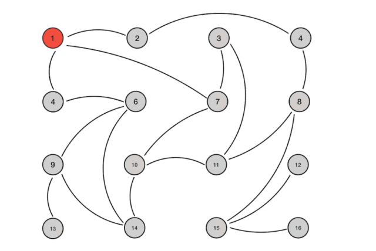
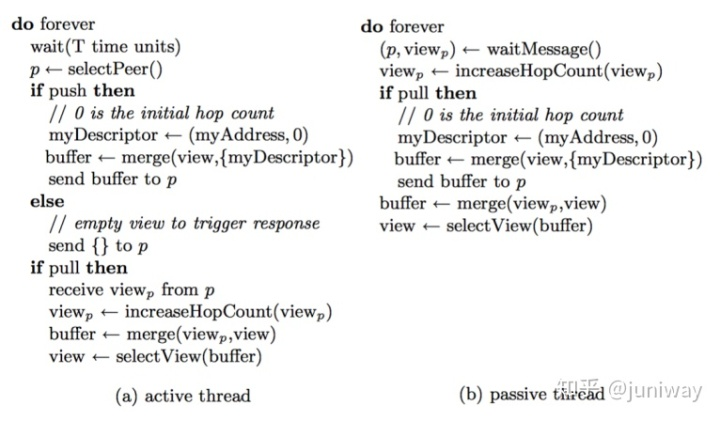
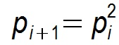
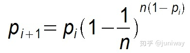

P2P 网络核心技术：Gossip 协议
背景
Gossip protocol 也叫 Epidemic Protocol （流行病协议），实际上它还有很多别名，比如：“流言算法”、“疫情传播算法”等。
这个协议的作用就像其名字表示的意思一样，非常容易理解，它的方式其实在我们日常生活中也很常见，比如电脑病毒的传播，森林大火，细胞扩散等等。
Gossip protocol 最早是在 1987 年发表在 ACM 上的论文 《Epidemic Algorithms for Replicated Database Maintenance》中被提出。主要用在分布式数据库系统中各个副本节点同步数据之用，这种场景的一个最大特点就是组成的网络的节点都是对等节点，是非结构化网络，这区别与之前介绍的用于结构化网络中的 DHT 算法 Kadmelia。
我们知道，很多知名的 P2P 网络或区块链项目，比如 IPFS，Ethereum 等，都使用了 Kadmelia 算法，而大名鼎鼎的 Bitcoin 则是使用了 Gossip 协议来传播交易和区块信息。
实际上，只要仔细分析一下场景就知道，Ethereum 使用 DHT 算法并不是很合理，因为它使用节点保存整个链数据，不像 IPFS 那样分片保存数据，因此 Ethereum 真正适合的协议应该像 Bitcoin 那样，是 Gossip 协议。
这里先简单介绍一下 Gossip 协议的执行过程：
Gossip 过程是由种子节点发起，当一个种子节点有状态需要更新到网络中的其他节点时，它会随机的选择周围几个节点散播消息，收到消息的节点也会重复该过程，直至最终网络中所有的节点都收到了消息。这个过程可能需要一定的时间，由于不能保证某个时刻所有节点都收到消息，但是理论上最终所有节点都会收到消息，因此它是一个最终一致性协议。
Gossip 演示
现在，我们通过一个具体的实例来深入体会一下 Gossip 传播的完整过程
为了表述清楚，我们先做一些前提设定
1、Gossip 是周期性的散播消息，把周期限定为 1 秒
2、被感染节点随机选择 k 个邻接节点（fan-out）散播消息，这里把 fan-out 设置为 3，每次最多往 3 个节点散播。
3、每次散播消息都选择尚未发送过的节点进行散播
4、收到消息的节点不再往发送节点散播，比如 A -> B，那么 B 进行散播的时候，不再发给 A。
注意：Gossip 过程是异步的，也就是说发消息的节点不会关注对方是否收到，即不等待响应；不管对方有没有收到，它都会每隔 1 秒向周围节点发消息。异步是它的优点，而消息冗余则是它的缺点。
这里一共有 16 个节点，节点 1 为初始被感染节点，通过 Gossip 过程，最终所有节点都被感染：

Gossip 的特点（优势）
1）扩展性
网络可以允许节点的任意增加和减少，新增加的节点的状态最终会与其他节点一致。
2）容错
网络中任何节点的宕机和重启都不会影响 Gossip 消息的传播，Gossip 协议具有天然的分布式系统容错特性。
3）去中心化
Gossip 协议不要求任何中心节点，所有节点都可以是对等的，任何一个节点无需知道整个网络状况，只要网络是连通的，任意一个节点就可以把消息散播到全网。
4）一致性收敛
Gossip 协议中的消息会以一传十、十传百一样的指数级速度在网络中快速传播，因此系统状态的不一致可以在很快的时间内收敛到一致。消息传播速度达到了 logN。
5）简单
Gossip 协议的过程极其简单，实现起来几乎没有太多复杂性。
Márk Jelasity 在它的 《Gossip》一书中对其进行了归纳：

Gossip 的缺陷
分布式网络中，没有一种完美的解决方案，Gossip 协议跟其他协议一样，也有一些不可避免的缺陷，主要是两个：
1）消息的延迟
由于 Gossip 协议中，节点只会随机向少数几个节点发送消息，消息最终是通过多个轮次的散播而到达全网的，因此使用 Gossip 协议会造成不可避免的消息延迟。不适合用在对实时性要求较高的场景下。
2）消息冗余
Gossip 协议规定，节点会定期随机选择周围节点发送消息，而收到消息的节点也会重复该步骤，因此就不可避免的存在消息重复发送给同一节点的情况，造成了消息的冗余，同时也增加了收到消息的节点的处理压力。而且，由于是定期发送，因此，即使收到了消息的节点还会反复收到重复消息，加重了消息的冗余。
Gossip 类型
Gossip 有两种类型：
- Anti-Entropy（反熵）：以固定的概率传播所有的数据
- Rumor-Mongering（谣言传播）：仅传播新到达的数据
Anti-Entropy 是 SI model，节点只有两种状态，Suspective 和 Infective，叫做 simple epidemics。
Rumor-Mongering 是 SIR model，节点有三种状态，Suspective，Infective 和 Removed，叫做 complex epidemics。
其实，Anti-entropy 反熵是一个很奇怪的名词，之所以定义成这样，Jelasity 进行了解释，因为 entropy 是指混乱程度（disorder），而在这种模式下可以消除不同节点中数据的 disorder，因此 Anti-entropy 就是 anti-disorder。换句话说，它可以提高系统中节点之间的 similarity。
在 SI model 下，一个节点会把所有的数据都跟其他节点共享，以便消除节点之间数据的任何不一致，它可以保证最终、完全的一致。
由于在 SI model 下消息会不断反复的交换，因此消息数量是非常庞大的，无限制的（unbounded），这对一个系统来说是一个巨大的开销。
但是在 Rumor Mongering（SIR Model） 模型下，消息可以发送得更频繁，因为消息只包含最新 update，体积更小。而且，一个 Rumor 消息在某个时间点之后会被标记为 removed，并且不再被传播，因此，SIR model 下，系统有一定的概率会不一致。
而由于，SIR Model 下某个时间点之后消息不再传播，因此消息是有限的，系统开销小。
Gossip 中的通信模式
在 Gossip 协议下，网络中两个节点之间有三种通信方式:
- Push: 节点 A 将数据 (key,value,version) 及对应的版本号推送给 B 节点，B 节点更新 A 中比自己新的数据
- Pull：A 仅将数据 key, version 推送给 B，B 将本地比 A 新的数据（Key, value, version）推送给 A，A 更新本地
- Push/Pull：与 Pull 类似，只是多了一步，A 再将本地比 B 新的数据推送给 B，B 则更新本地
如果把两个节点数据同步一次定义为一个周期，则在一个周期内，Push 需通信 1 次，Pull 需 2 次，Push_Pull 则需 3 次。虽然消息数增加了，但从效果上来讲，Push_Pull 最好，理论上一个周期内可以使两个节点完全一致。直观上，Push/Pull 的收敛速度也是最快的。
复杂度分析
对于一个节点数为 N 的网络来说，假设每个 Gossip 周期，新感染的节点都能再感染至少一个新节点，那么 Gossip 协议退化成一个二叉树查找，经过 LogN 个周期之后，感染全网，时间开销是 O(LogN)。由于每个周期，每个节点都会至少发出一次消息，因此，消息复杂度（消息数量 = N * N）是 O(N^2) 。注意，这是 Gossip 理论上最优的收敛速度，但是在实际情况中，最优的收敛速度是很难达到的。
假设某个节点在第 i 个周期被感染的概率为 pi，第 i+1 个周期被感染的概率为 pi+1 ，
1）则 Pull 的方式:

2）Push 方式：

显然 Pull 的收敛速度大于 Push ，而每个节点在每个周期被感染的概率都是固定的 p (0<p<1)，因此 Gossip 算法是基于 p 的平方收敛，也称为概率收敛，这在众多的一致性算法中是非常独特的。
全文完！